WORK LOAFER EDITION / independent parody reconstruction
CodexKeybored
Parametric Fusion 360 mechanics, production STEP/DXF files, a wired six-layer PCB, BOM/CPL, USB HID firmware, and live JLC quotes—assembled into one reproducible first-article package.
From the first prompt to Fusion 360, KiCad, Gerbers, firmware, and a real upload into JLCPCB + JLCCNC.
This is not a disclaimer. It is the product story. One continuous conversational build loop crossed research, industrial design, CNC, multilayer electronics, sourcing, firmware, testing, pricing, and factory handoff—and left every intermediate artifact open for inspection.
01 / OBSERVEImages became evidence
Public renders were compared, scaled from the 19.05 mm key pitch, and separated into confirmed, measured, and inferred facts.
02 / MODELEvidence became solids
Dimensions became a parametric 108 × 108 mm Fusion assembly, four machinable bodies, STEP/DXF, and controlled drawings.
03 / CONNECTControls became a PCB
The interface became a clean-room STM32F072 design, six copper layers, 74 placement centers, and a zero-error DRC gate.
04 / ANIMATEThe PCB learned USB
TinyUSB firmware, RGB safety limits, factory binaries, checksums, and a browser-based 20-input acceptance test made it behave.
05 / CONTRACTPreferences became an SOP
“No soldering at home” became both-side PCBA, consigned switches, manual operations, flashing, FCT, and photo evidence.
06 / QUOTEFiles entered the factory
Gerbers, BOM/CPL, STEP, drawings, and the turnkey ZIP entered authenticated JLC flows and returned real saved prices.
The best example is one sentence: “the aluminum thing looks slightly tilted.” That observation propagated into a corrected 5° wedge, a refreshed Fusion body, a new STEP file, a revised drawing, a successful JLCCNC import, a $54.56 live quote, and removal of the obsolete flat part from the cart. That traceable continuity—from vibe to physical manufacturing—is the project.
External dimensions were scaled from the official near-orthographic render using the confirmed 19.05 mm key pitch. Internal steps and fasteners remain engineering assumptions until a physical unit can be inspected.
Official reference
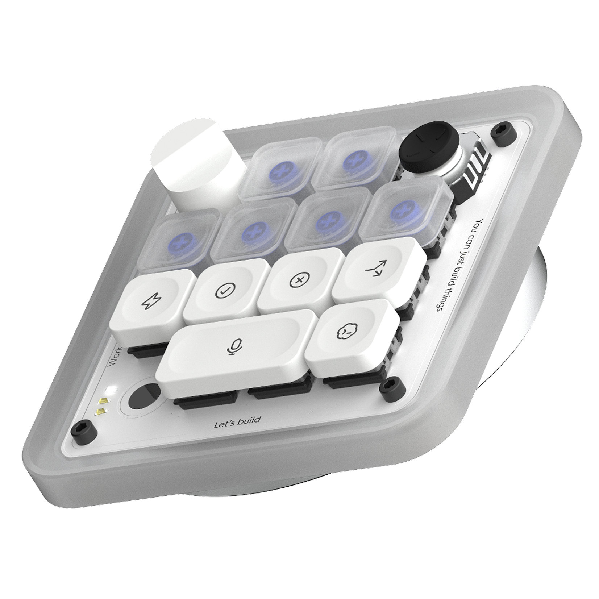
Our Fusion assembly
Corrected interpretation: the top panel contains twelve conventional low-profile MX keys. Work Louder's published “13 mechanical switches” count includes the encoder push; there is no mystery thirteenth key in the model or PCB.
measured108 × 108external envelope, mm
confirmed19.05center pitch, mm
measured90 × 90top PCB, mm
measuredR14external corner radius
measuredØ94aluminum base, mm
measured5°working-plane tilt
inferred3.8 → 12wedge thickness, mm
inferredM3 / 78fastener / pitch, mm
02 / interface map
The exact layout
A 4×4 coordinate grid centered at ±28.575 and ±9.525 mm. The encoder sits on the left and the planar joystick on the right, matching the full-size official reference.
ElectronicsSTM32F072, USB-C, lower keep-out and future wireless/battery volumevariable
Weight wedge6061-T6, Ø94, planar top, 5° underside3.8–12 mm
Grip ringsilicone/EPDM with 3M 467MP adhesive1.0 mm
03 / buy first
Keys & controls
The exact Codex legend set is not sold separately. For a one-off, the most reliable path is genuine Work Louder switch/cap geometry, followed by UV printing or laser ablation after a coating test coupon.
ISO 4762 black screws; threaded brass/aluminum spacers
fit after sample
$10–20 budget
Grip ring
1
1 mm silicone/EPDM + 3M 467MP, laser/plotter cut
custom
$5–15 budget
How to reproduce the Codex keycaps: use blank low-profile MX PBT with UV printing or temperature-qualified dye-sublimation for white keys. For illuminated keys, start with MX Pure, apply an opaque compatible coating, then laser-open the icon. Single-shot custom PBT is economically irrational for one unit; validate a fully custom shape in tough/clear SLA, beginning with an isolated MX-cross calibration coupon.
04 / cnc pack
Four machined parts
All STEP files passed automated JLC CNC import. The base was replaced with a wedge after the official side render revealed the tilt; the early flat version is no longer a production part.
Official exploded render
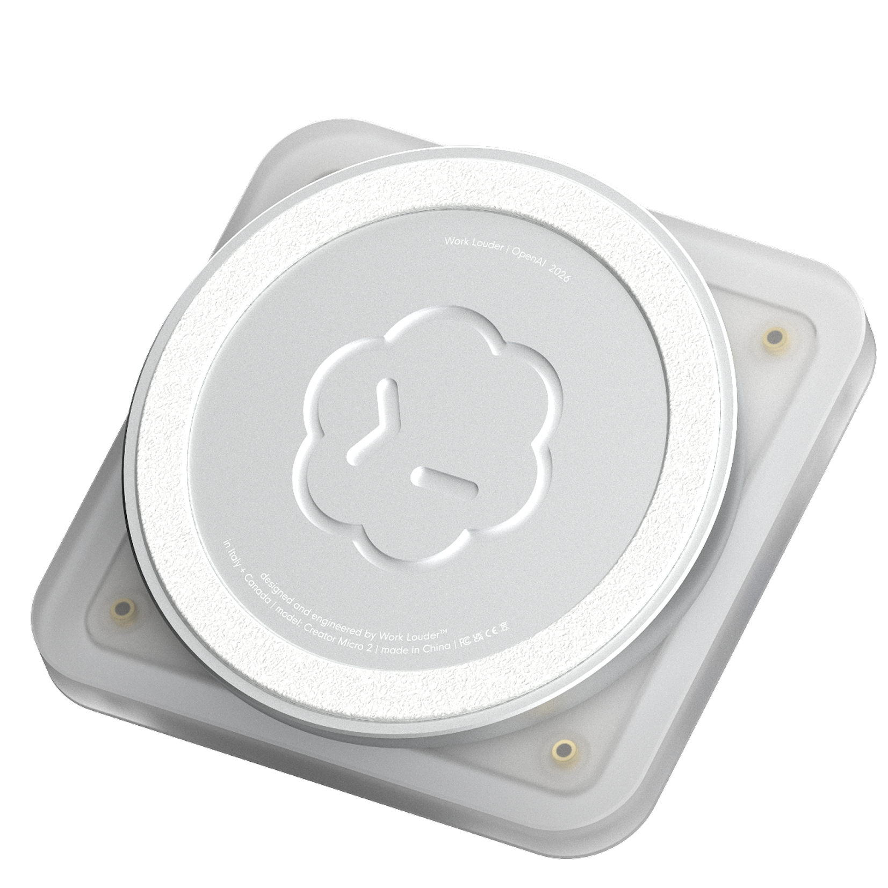
Fusion / corrected 5° side profile
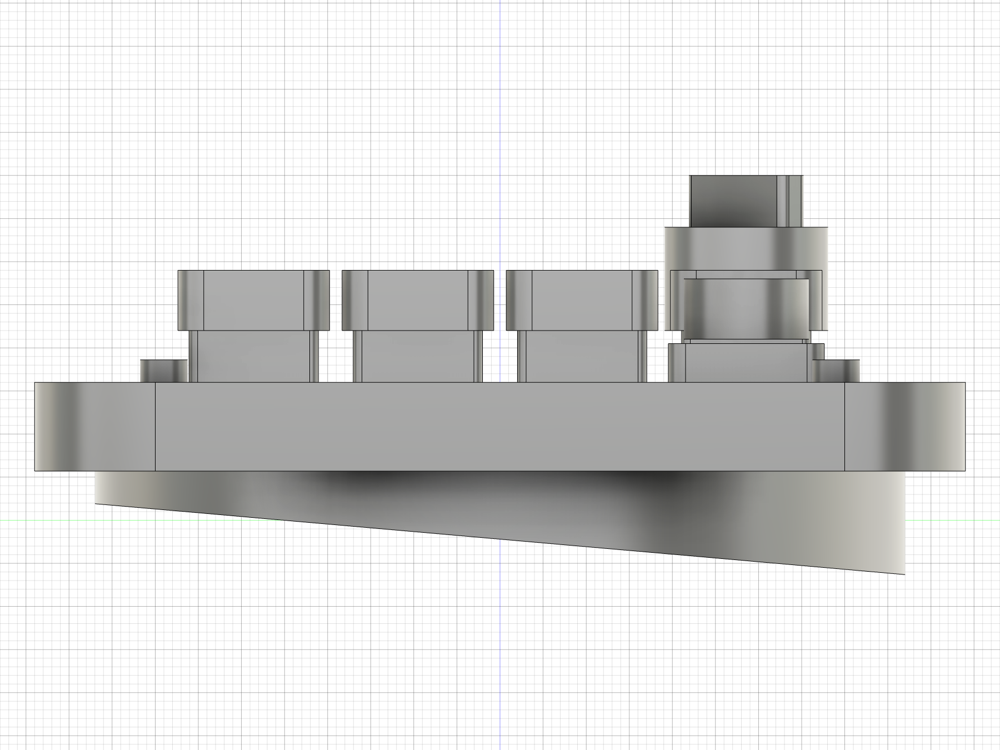
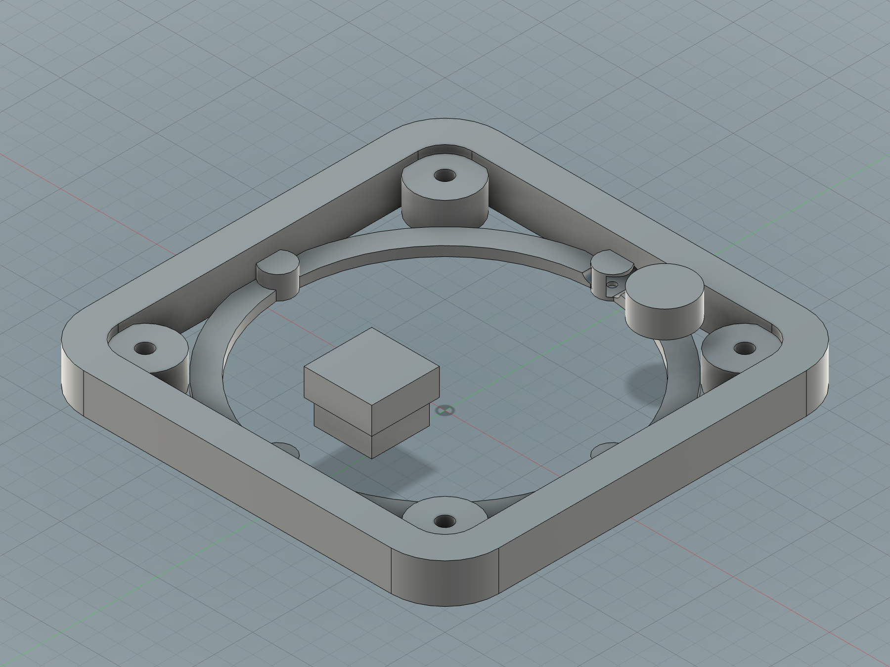
CM2-001 / CNC
Upper housing
A diffusing outer bezel with an internal pocket for the 90 mm panel. Machine cast PC/PMMA for the transparent version; use stabilized maple, walnut, or birch laminate plus a separate light pipe for a warm wood prototype.
Envelope108 × 108 × 10.3
CornerR14
Opening92 × 92 / R7
Volume41,391.64 mm³
$58.96 / qty 1
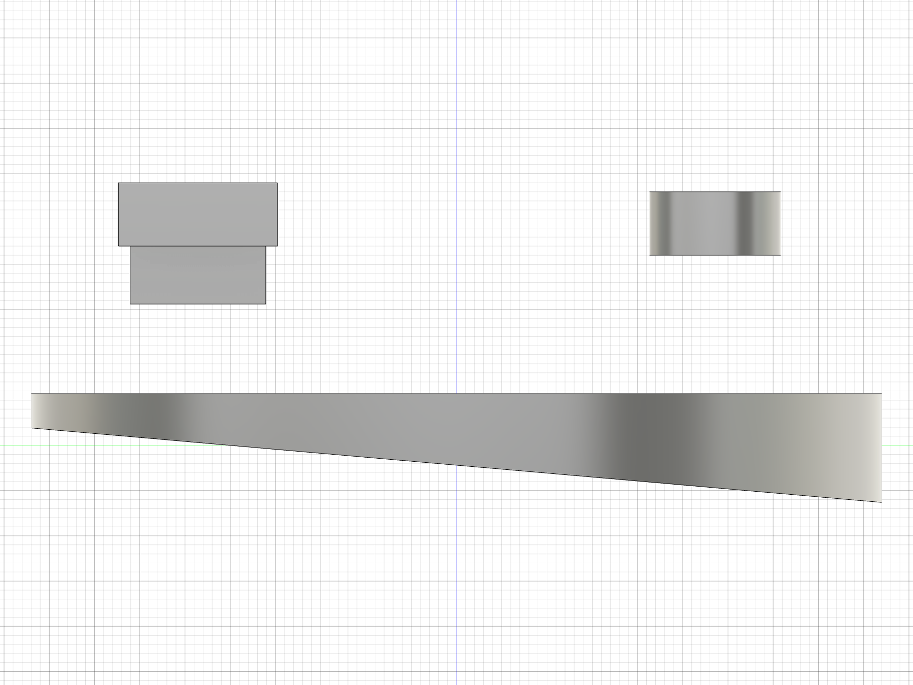
CM2-002 / CNC / REVISED
Angled weight
A solid wedge with a flat upper datum and sloped underside. It corrects the critical error in the early flat base and establishes the slightly raised official profile.
EnvelopeØ94 × 12 max
Tilt5° nominal
Thickness3.8 → 12.0
Finishbead blast + black anodize
$54.56 / qty 1
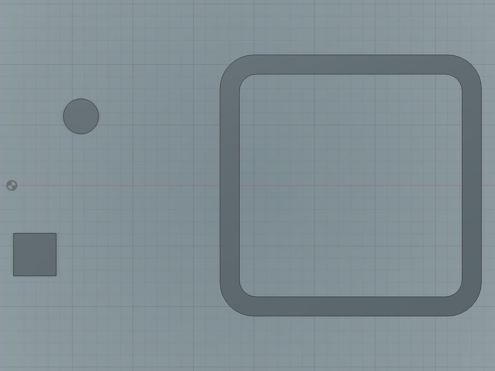
CM2-003 / OPTIONAL
Light pipe
A thin matte PMMA insert between the PCB and an opaque housing. It is essential for the wood option; without it, the lower RGB chain cannot produce the characteristic perimeter glow.
Envelope108 × 108 × 1.5
Materialfrosted PMMA
Finishuniform matte
Roleunderglow diffusion
$40.62 / qty 1
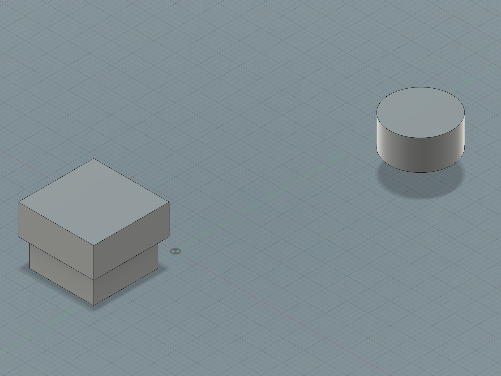
CM2-004 / PROTOTYPE
Joystick cap
A rigid POM fit-check part. Cast the final tactile cap in Shore A 40–50 silicone after measuring the real RKJXY or selected substitute.
EnvelopeØ14.5 × 7
Quote materialPOM
Final materialsilicone / TPU
Fitdepends on joystick shaft
$19.42 / qty 1
05 / live quote
JLC CNC
Quotes were captured in an authenticated session on July 17, 2026. Prices are dynamic and exclude possible tax or duty; the corrected wedge is saved in the cart.
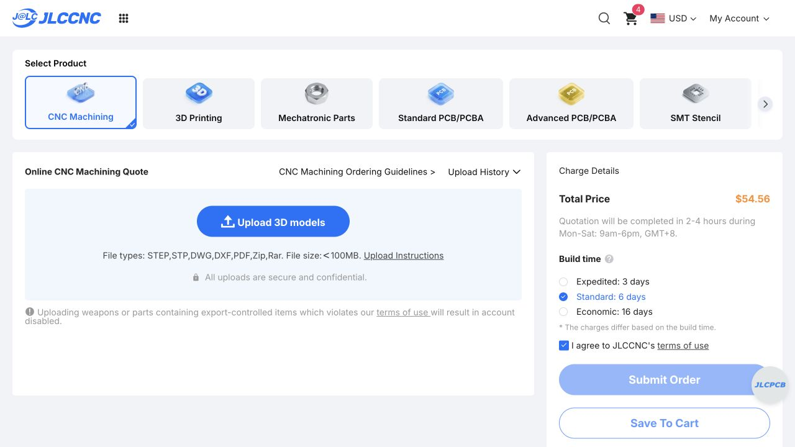
Cart cleaned: the obsolete $23.71 flat base was removed. Four production CNC items remain; CM2-002 is now the corrected 5° wedge at $54.56.
Part
Quote ID
USD
CM2-001 / Polycarbonate
CNC…2636
$58.96
CM2-002 / 6061 wedge
CNC…3034
$54.56
CM2-003 / PMMA
CNC…2631
$40.62
CM2-004 / POM
CNC…2621
$19.42
CNC subtotal
$173.56
PCB + PCBA
$173.65
Combined shipping
$29.69
JLC cart delivered estimate
$376.90
Full IDs: wedge CNC2607175003034-3086316A; cap CNC2607175002621-3086316A; light pipe CNC2607175002631-3086316A; upper CNC2607175002636-3086316A. Cart weight: 1.06 kg; estimated ship date: July 25, 2026. Base threads remain unfrozen until first fit-check.
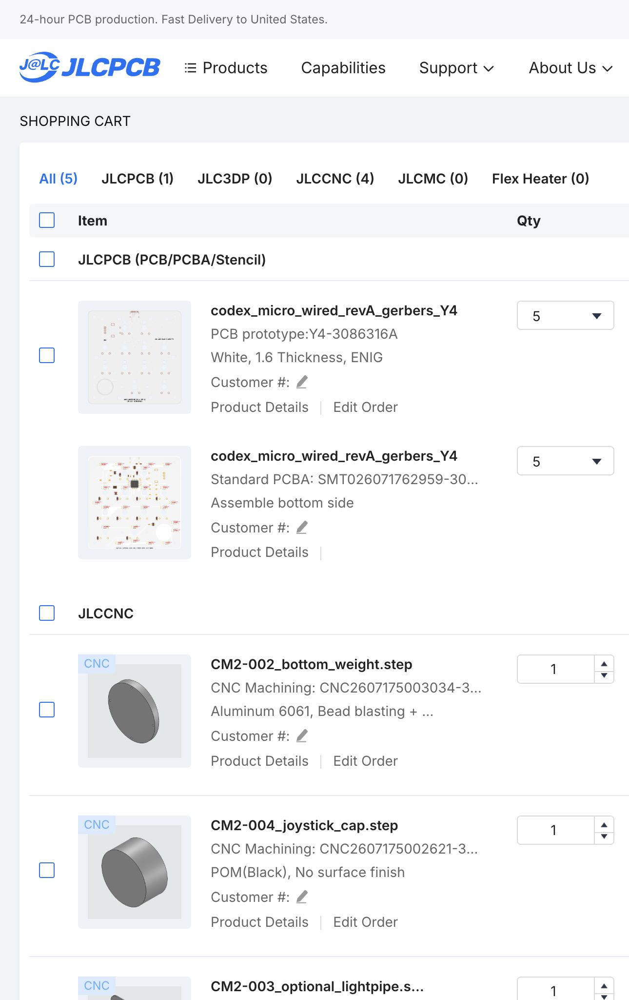
06 / electronics
Wired Rev A2
The wired version preserves the 90×90 mm mechanical interface and internal volume for a future swappable wireless PCB. Six layers provide continuous GND/+5V planes, two signal layers, and a short crystal-less USB path.
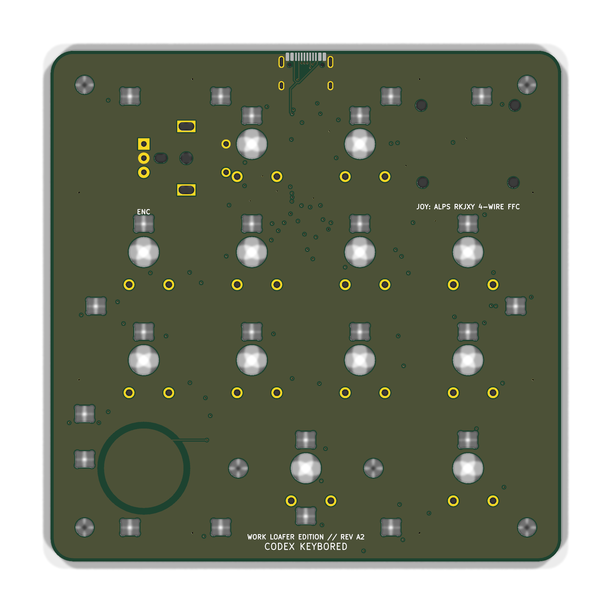
TOP / CODEX KEYBORED + WORK LOAFER EDITION
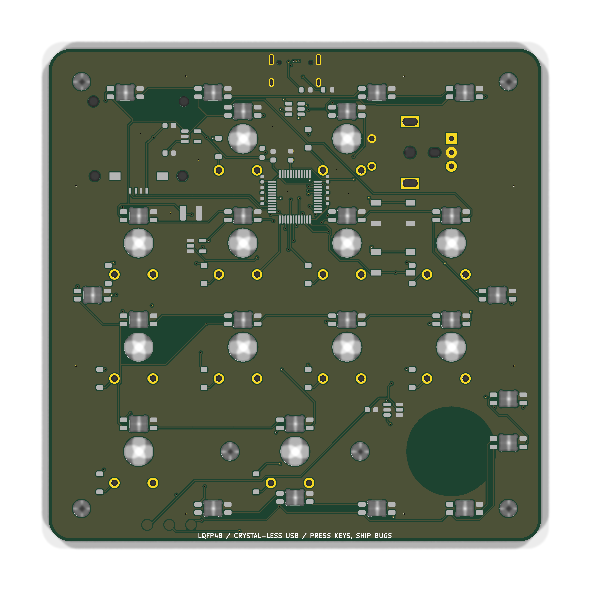
BOTTOM / STM32F072 island, power, matrix, RGB, and PRESS KEYS, SHIP BUGS
Production gate closed: KiCad DRC = 0 violations / 0 unconnected. The Gerber ZIP includes all six copper layers, mask, paste, silk, Edge.Cuts, and separate PTH/NPTH drill files. Machine-readable connectivity is exported as IPC-D-356.
PowerME6211 3.3 V LDO, local bypass and 100 µF 5 V LED bulk capacitor.
Ref
Component
Selected part
LCSC
Assembly
U1
MCU
STM32F072CBT6 / LQFP48
C81720
JLC bottom
U3
3.3 V LDO
ME6211C33M5G-N
C82942
JLC bottom
U4
USB ESD
USBLC6-2SC6
C7519
JLC bottom
U5
LED level shift
SN74AHCT1G125DBVR
C7484
JLC bottom
U6
Touch controller
TTP223-BA6-TD
C42422127
JLC bottom
J1
USB-C
HRO TYPE-C-31-M-12
C165948
JLC top side
D1–D12
Matrix diode
1N4148W
C81598
JLC bottom
LED1–LED24
RGB
SK6812MINI-E reverse mount
C5149201
JLC bottom
R3,R4
10 kΩ bias
Yageo RC0603FR-0710KL
C98220
JLC substitution
SW1–SW12
Low-profile switch
Work Louder wrk. LP1 / Gateron footprint
consigned
JLC manual/THT
ENC1
Encoder
Alps EC11E09444A8
C1322538
JLC manual/THT
JOY1
Joystick
Alps RKJXY1000006 with knob
consigned
JLC mechanical + FFC
zero soldering at home
JLC can finish the electronics
The production route is now Standard PCBA on both sides, with specialty parts shipped directly into JLC's consigned-parts inventory. JLC manually installs the switches and encoder, fits the joystick, flashes the STM32, runs the supplied USB control test, and installs caps on the PRIMARY unit. The customer only closes the CNC enclosure with four screws after first-article fit approval.
01 / SOURCEConsign special partsOne WRK-LP1 pack, four RKJXY joysticks, one keycap set, and one dial cap ship directly to JLC.
02 / BUILDBoth-side PCBAJLC places SMD parts and USB-C, then manually solders 12 switches and the encoder.
03 / VERIFYFlash + FCTProgram the release image, exercise 20 HID events, inspect all 24 RGB emitters, and save evidence.
04 / DELIVERPrimary + spareOne cosmetically completed control-pad PCBA, one programmed spare, and three bare reserve boards.
Live turnkey cart: JLC job Y5 / SMT026071763199-3086316A now holds five PCBs and two both-side Standard PCBA units. The captured base is $193.01 ($81.40 PCB + $111.61 PCBA). Function testing, programming/manual work, the PCBA remark, and consigned-part procurement remain quote-after-review, so $193.01 is a floor rather than the finished-device total.
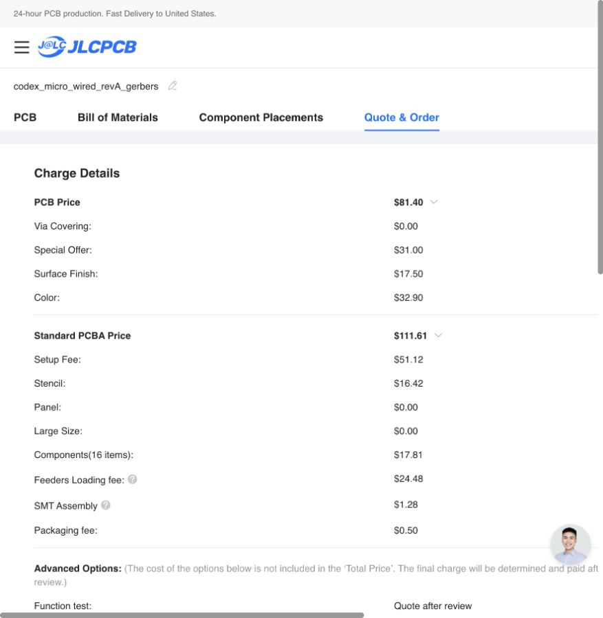
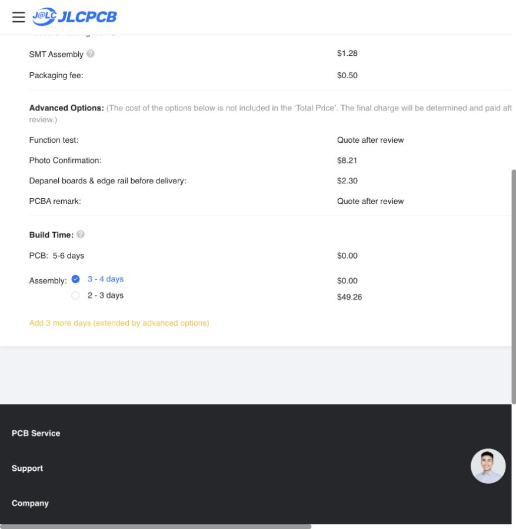
JLCPCB / live turnkey cart
$193.01 / captured base
THE HAND WORK IS IN THE FACTORY BRIEF
Both-side Standard PCBA, depaneling, photo confirmation, functional testing, and the complete 1.1 MB factory handoff are saved in the live JLC job. All 16 catalog groups passed the BOM matcher. Consigned switches and mechanical controls are called out in the attached SOP for manual assembly and engineering review.
Future Bluetooth compatibility: housing and fasteners do not depend on the STM32F072. The lower volume and port keep-outs remain available for a replacement ESP32-S3/charging PCB, battery, and FFC; the current wired PCB remains a single monolithic board rather than a separate controller module.
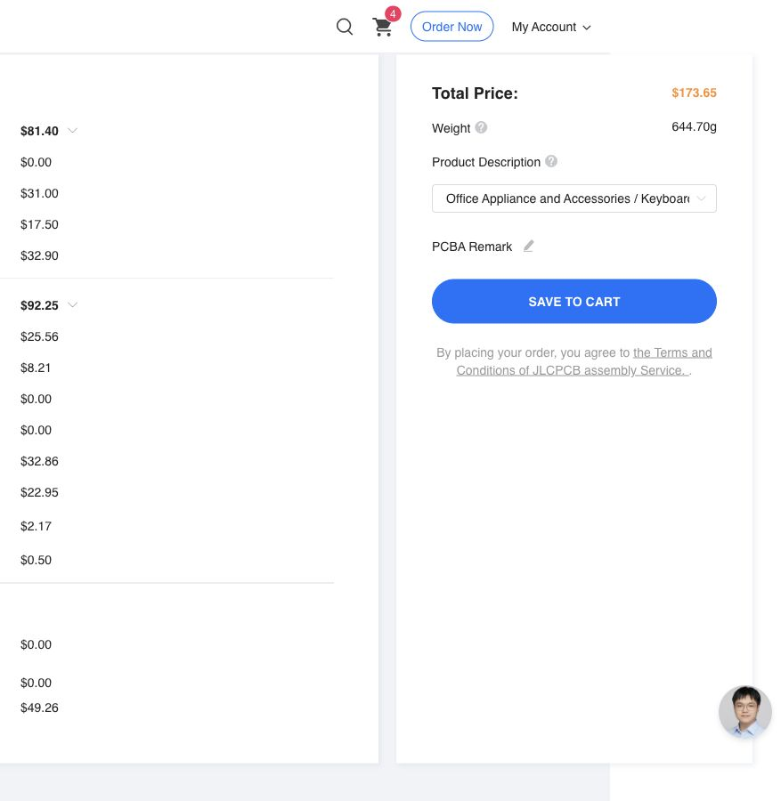
JLCPCB / baseline cart
$173.65 / partial baseline, before shipping
PCB $81.40 + bottom-side Standard PCBA $92.25. This saved price verifies the six-layer board and 15/15 bottom-side groups, but it does not include turnkey specialty-part assembly or testing. Whole baseline cart: $347.21 merchandise + $29.69 shipping = $376.90. Do not treat that number as the final finished-device price.
07 / firmware
USB HID ready
TinyUSB firmware was built with Arm GNU Toolchain 15.2 for the STM32F072CBT6. BIN/HEX/ELF files and checksums are ready; functional verification on a physical Rev A2 board is still required.
build verifiedBIN / HEXready for SWD
prototypeF13–F24neutral key map
compiled16,548 Bflash / 12.63%
compiled2,448 BRAM / 14.94%
08 / handoff
Order files
All sources are local and reproducible. Before payment, open the STEP and Gerber files in an independent viewer and verify every critical fit against the selected physical components.
This is not leaked CAD and not an official product file. Geometry was reconstructed from public renders and published specifications; branded icons are included only as private-prototype references.
Do not freeze before physical fit-check: the exact internal housing step, screw length, threads/inserts, 2U stabilizer, encoder shaft, joystick-cap fit, and exact planar-joystick marking. Any commercial or public version requires original legends and branding.